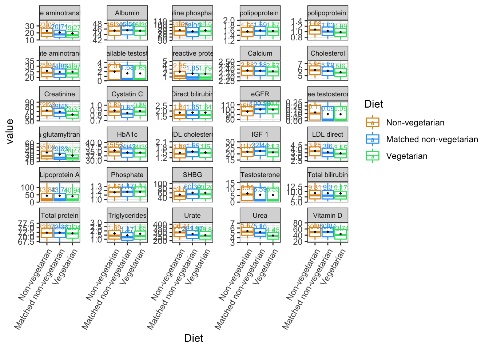
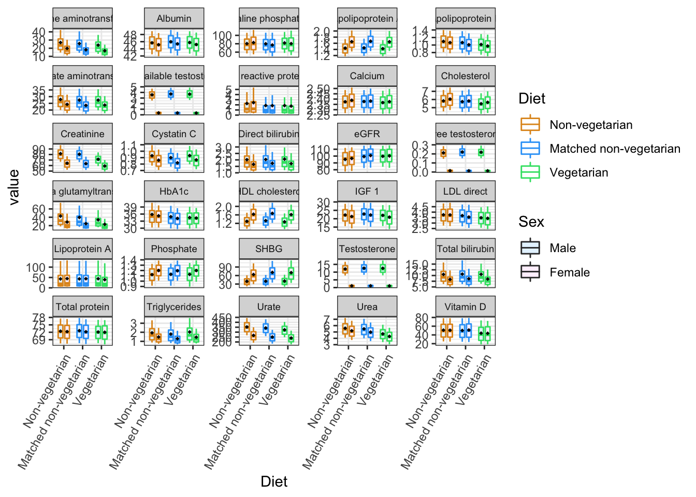

suppressMessages(silent <- lapply(
c("bestNormalize","plyr", "dplyr", "tidyverse", "ggpubr",
"RNOmni", "genpwr",
"data.table", "vroom","kableExtra"),
library, character.only=T))
calc_stat <- function(x) {
coef <- 1.5
n <- sum(!is.na(x))
# calculate quantiles
stats <- quantile(x, probs = c(0.1, 0.25, 0.5, 0.75, 0.9))
names(stats) <- c("ymin", "lower", "middle", "upper", "ymax")
return(stats)
}
fun_mean <- function(x){
return(data.frame(y=round(mean(x),4),label=round(mean(x,na.rm=T),2)))}
table = function (..., useNA = 'always') base::table(..., useNA = useNA)new<-as_tibble(vroom("/Users/mike/Documents/R_files/VegMarkdown/pheno/BioxVeg_pheno_09112022.txt"))## Rows: 155375 Columns: 132
## ── Column specification ────────────────────────────────
## Delimiter: " "
## dbl (132): FID, IID, Age, Sex, Townsend, Geno_batch, AlcoholFreq, Alanine_am...
##
## ℹ Use `spec()` to retrieve the full column specification for this data.
## ℹ Specify the column types or set `show_col_types = FALSE` to quiet this message.phenotypes=new%>%select(Alanine_aminotransferase:Vitamin_D,
bioavailableTest, freeTest, eGFR, Veg5yr1,Sex)%>%
select(-c(Oestradiol, Rheumatoid_factor, Glucose))
phenotypes=phenotypes[c(1:6, 28, 7:12, 30, 29, 13:27,31,32)]
colnames(phenotypes)=gsub(colnames(phenotypes), pattern = "_", replacement = " ")
colnames(phenotypes)[c(7,15)]=c("Bioavailable testosterone", "Free testosterone")
colnames(phenotypes)%>%kbl()%>%
scroll_box(width = "200px", height = "200px")| x |
|---|
| Alanine aminotransferase |
| Albumin |
| Alkaline phosphatase |
| Apolipoprotein A |
| Apolipoprotein B |
| Aspartate aminotransferase |
| Bioavailable testosterone |
| C reactive protein |
| Calcium |
| Cholesterol |
| Creatinine |
| Cystatin C |
| Direct bilirubin |
| eGFR |
| Free testosterone |
| Gamma glutamyltransferase |
| HbA1c |
| HDL cholesterol |
| IGF 1 |
| LDL direct |
| Lipoprotein A |
| Phosphate |
| SHBG |
| Testosterone |
| Total bilirubin |
| Total protein |
| Triglycerides |
| Urate |
| Urea |
| Vitamin D |
| Veg5yr1 |
| Sex |
#From matching script
md1=as_tibble(read.csv("/Users/mike/Documents/R_files/VegMarkdown/MATCHED.pheno.10042022.csv"))pheno=phenotypes%>%select(-Sex)
phe=md1%>%select(Alanine_aminotransferase_rint:Free_testosterone_rint)%>%colnames()
phe2=str_split(phe, "_rint", simplify=TRUE)[,1]
longpheno<-as_tibble(melt(setDT(pheno), id.vars = c("Veg5yr1")))
longpheno$Diet<-"Non-vegetarian"
longpheno$Diet[longpheno$Veg5yr1==1]<-"Vegetarian"
longpheno$Diet<-as.factor(longpheno$Diet)
longpheno2<-as_tibble(melt(setDT(md1%>%select(all_of(sort(phe2)), Veg5yr1)), id.vars = c("Veg5yr1")))
longpheno2$variable=gsub(longpheno2$variable, pattern = "_", replacement = " ")
longpheno2$Diet<-"Matched non-vegetarian"
longpheno2$Diet[longpheno2$Veg5yr1==1]<-"Vegetarian"
longpheno2=longpheno2%>%filter(Diet!="Vegetarian")
bind=rbind(longpheno, longpheno2)
bind$Diet<-factor(bind$Diet, levels=c("Non-vegetarian", "Matched non-vegetarian",
"Vegetarian"))#png("boxplot.10042022.png",width = 13, height = 9, units = 'in', res = 600)
p1=ggplot(bind, aes(x=Diet, y=value, color=Diet))+
theme_bw()+
stat_summary(fun.data = calc_stat, geom="boxplot") +
facet_wrap(~variable,scales = "free_y",nrow = 6)+
theme(axis.text.x = element_text(angle = 60,
vjust = 1, hjust=1),
strip.text.x = element_text(size = 7))+
stat_summary(fun=mean, geom="point",
shape=18, size=1, color="black", fill="black")+
stat_summary(fun.data = fun_mean,
geom="text", vjust=-0.7, size=2.5)+
scale_color_manual(values=c("#E0951F", "#2FA3F7","#36E072"))+
scale_fill_manual(values=c("white"))
p1## Warning: Removed 469679 rows containing non-finite values (stat_summary).
## Removed 469679 rows containing non-finite values (stat_summary).
## Removed 469679 rows containing non-finite values (stat_summary).
#dev.off()MF<-as_tibble(melt(setDT(phenotypes), id.vars = c("Veg5yr1", "Sex")))
MF$Diet<-"Non-vegetarian"
MF$Diet[MF$Veg5yr1==1]<-"Vegetarian"
MF2<-as_tibble(melt(setDT(md1%>%select(all_of(sort(phe2)), Veg5yr1, Sex)), id.vars = c("Veg5yr1","Sex")))
MF2$variable=gsub(MF2$variable, pattern = "_", replacement = " ")
MF2$Diet<-"Matched non-vegetarian"
MF2$Diet[MF2$Veg5yr1==1]<-"Vegetarian"
MF2=MF2%>%filter(Diet!="Vegetarian")
bindMF=rbind(MF, MF2)
bindMF$Diet<-factor(bind$Diet, levels=c("Non-vegetarian", "Matched non-vegetarian",
"Vegetarian"))
bindMF$Sex=mapvalues(bindMF$Sex, from=c(1,2), to=c("Male","Female"))
bindMF$Sex=factor(bindMF$Sex, levels=c("Male", "Female"))
#png("boxplot.MF.10042022.png",width = 13, height = 9, units = 'in', res = 600)
p2=ggplot(bindMF, aes(x=Diet, y=value, fill=Sex, color=Diet))+
theme_bw()+
stat_summary(fun.data = calc_stat, geom="boxplot",
position=position_dodge(0.7), width=0.5) +
facet_wrap(~variable,scales = "free_y",nrow = 6)+
theme(axis.text.x = element_text(angle = 60,
vjust = 1, hjust=1),
strip.text.x = element_text(size = 7))+
stat_summary(fun=mean, geom="point",
shape=18, size=1,
color="black", fill="black",
aes(Diet = interaction(Diet,Sex)),
position=position_dodge(0.7), width=0.5)+
scale_color_manual(values=c("#E0951F", "#2FA3F7","#36E072"))+
scale_fill_manual(values=c("#E6F4FF", "#FFF2FE"))## Warning: Ignoring unknown parameters: width## Warning: Ignoring unknown aesthetics: Dietp2## Warning: Removed 469679 rows containing non-finite values (stat_summary).## Warning: Removed 469679 rows containing non-finite values (stat_summary).
#dev.off()